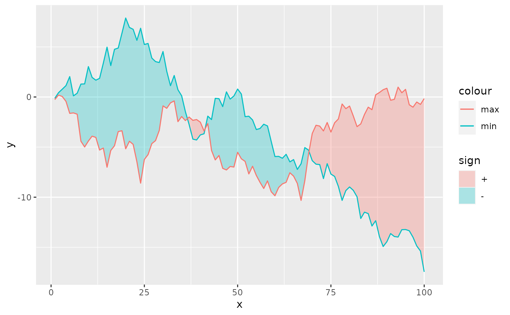

This makes a ribbon that is filled depending on whether the max is
higher than min. This can be useful for displaying differences
between two series.
stat_difference( mapping = NULL, data = NULL, geom = "ribbon", position = "identity", ..., levels = c("+", "-", "0"), na.rm = FALSE, orientation = NA, show.legend = NA, inherit.aes = TRUE )
| mapping | Set of aesthetic mappings created by |
|---|---|
| data | The data to be displayed in this layer. There are three options: If A A |
| geom | Use to override the default connection between
|
| position | Position adjustment, either as a string, or the result of a call to a position adjustment function. |
| ... | Other arguments passed on to |
| levels | A |
| na.rm | If |
| orientation | The orientation of the layer. The default ( |
| show.legend | logical. Should this layer be included in the legends?
|
| inherit.aes | If |
A Layer object that can be added to a plot.
The stat may reorder the group aesthetic to accommodate two
different fills for the signs of differences. The stat takes care to
interpolate a series whenever a crossover between max and min series
happens. This makes the ribbon not look stumpy at these crossovers.
geom_ribbon() understands the following aesthetics (required aesthetics are in bold):
x or y
ymin or xmin
ymax or xmax
alpha
colour
fill
group
linetype
size
Learn more about setting these aesthetics in vignette("ggplot2-specs").
signA factor with the levels attribute set to the levels
argument.
This geom treats each axis differently and, thus, can thus have two orientations. Often the orientation is easy to deduce from a combination of the given mappings and the types of positional scales in use. Thus, ggplot2 will by default try to guess which orientation the layer should have. Under rare circumstances, the orientation is ambiguous and guessing may fail. In that case the orientation can be specified directly using the orientation parameter, which can be either "x" or "y". The value gives the axis that the geom should run along, "x" being the default orientation you would expect for the geom.
See geom_histogram(), geom_freqpoly() for
other methods of displaying continuous distribution.
See geom_violin() for a compact density display.
set.seed(2021) df <- data.frame( x = 1:100, y = cumsum(rnorm(100)), z = cumsum(rnorm(100)) ) ggplot(df, aes(x = x)) + stat_difference(aes(ymin = y, ymax = z), alpha = 0.3) + geom_line(aes(y = y, colour = "min")) + geom_line(aes(y = z, colour = "max"))